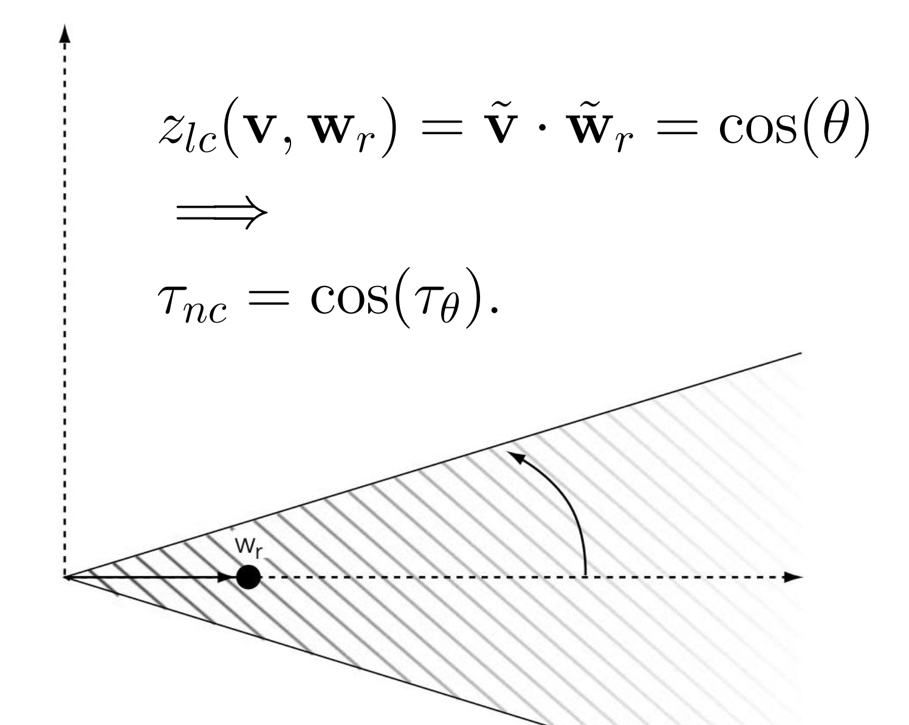
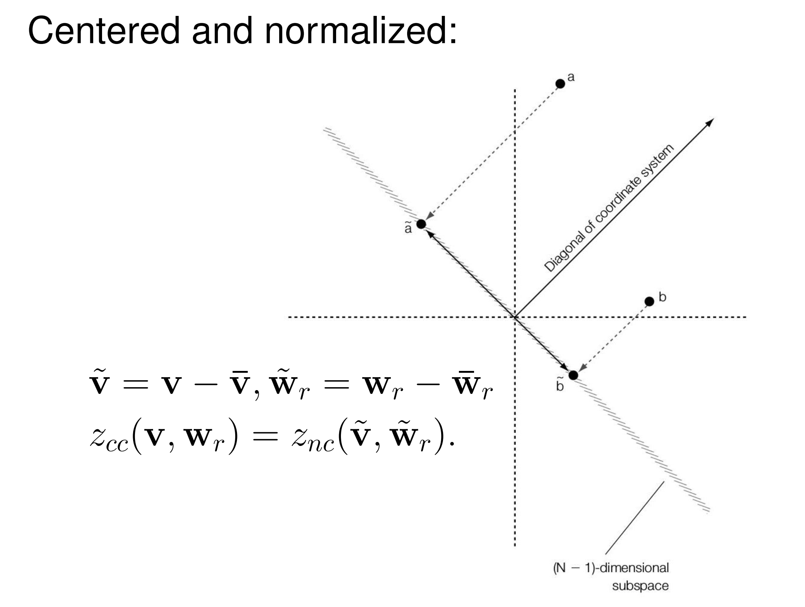
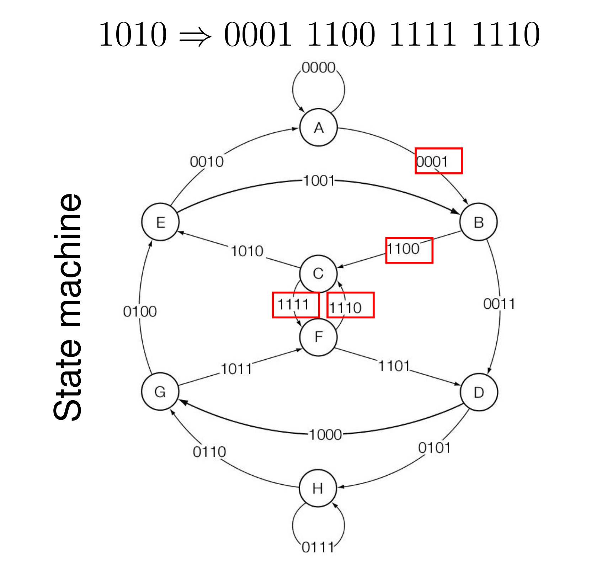

Watermark¶
约 7767 个字 预计阅读时间 39 分钟
Properties¶
- <1> Blind vs Informed
- Blind Watermarking 盲水印
- 检测时不需要知道原始 work，也称公开水印系统(Public Watermarking System)
- 常用于 Copy Control 等应用场景
- Informed Watermarking 知情水印
- 检测时需要访问原始 work，也称私有水印系统(Private Watermarking System)
- 常用于 Transaction-Tracking 等应用场景
- Blind Watermarking 盲水印
- <2> False Positive 假阳性 or 误检率
- 指 Detector 错误地在不存在水印的 work 中检测到了水印
- 根据不同应用场景，使用不同方式进行误检率计算
- Fixed Work + Random Watermarks：常用于 Transaction-Tracking
- Fixed Watermark + Random Works：常用于 Copy Control
- <3> Robustness
- 水印通常需具备在常见信号处理操作后仍能被可靠检测的能力
- 对于图像，可能是过滤、压缩、几何变形、信号失真
- 对于视频，可能是录制、帧率变换
- 对于音频，可能是混音
- 某些情况下，过于鲁棒的水印反而是不必要的。脆弱水印设计为对任何修改都非常敏感，常用于内容认证（Authentication），一旦作品被篡改，水印就会被破坏，从而实现完整性验证
- 水印通常需具备在常见信号处理操作后仍能被可靠检测的能力
Communication-Based Models¶
要在信道中进行传输，我们需要将 Message 转换为 Signal。然而，在信道传输过程中，难免会遇到噪音或者信号衰减。基于此，我们构建出如下 Communication Systems：
{kind=link}
{kind=link}
在不考虑信号衰减的情况下，最终接收者 decoder 收到的信号 \(c_{wn}\) 如下：
Watermark Key 是可选项，用于先将 Input Message 加密再嵌入 Work 中，实现 Encryption
E_BLIND 模型属于 Blind Embedding 的一种。我们先考虑 message \(m\) 只有 1 bit，即 \(m\in 0,1\)，此时我们称 Key 为 Reference Pattern，记为 \(w_r\)，它的长度为 \(N\)，与 work 的像素/系数大小相同：
- <1> Encoding into Message Pattern：
- \(w_{m} = (2m-1) w_{r}\)
- 当 \(m=1\) 时，\(w_{m} = w_{r}\)
- 当 \(m=0\) 时，\(w_{m} = -w_{r}\)
- <2> Modulate to Added Pattern：
- \(w_{a} = \alpha w_{m}\)
- \(\alpha\) 称为控制强度因子，越大嵌入越强，但失真越大
- <3> Embedding
- \(c_{w} = c_{o} + w_{a}\)
- <4> After Transmission
- \(c = c_{w} + n\)
- \(c= \alpha (2m-1) w_{r} + c_{0}+ n\)
检测方案采用 D_LC，我们并不需要原始图像，而是直接将 \(c\) 与 \(w_r\) 做归一化点积，该统计量记作 \(z_{lc}\)。绝对值越大，表示 \(c\) 和 \(w_r\) 的线性相关性越强：
统计上，干扰项 \((c_{o}+n)\) 通常与 \(w_r\) 不相关，因此它们之间的点积均值为 0，此处记为 \(\varepsilon\)
图像通常在低频上具有更多信息，因此如果 Reference Pattern \(w_r\) 也是低频的，可能会导致 \(\varepsilon\) 过大，从而出现 worse fidelity。
为了检测 \(m\)，我们设置一个阈值 \(\tau_lc\)：
中间区域称为拒绝区，可以看到，当 \(\alpha\) 极小时，几乎不能正确检测到水印
在实际应用中，我们通常会对 \(w_r\) 进行归一化处理，要求它的方差为 1，即：
由于 \(w_r\) 的均值 \(\mu_{w_{r}}\) 通常接近 0，我们可以认为统计量的期望值近似于：
给出一个实验数据
- 2000 个 Images：\(\alpha = 0\)，no watermark
- 2000 个 Images：\(\alpha=1, m=1\)
- 2000 个 Images：\(\alpha=1, m=0\)
- 设置阈值 \(\tau = 0.7\)
- 此时 False Positive Rate 为 0.01%，即图中虚线部分延申到左右两侧的部分（虽然并没有画出来）
- 此时 Effectiveness 为 98%，即有水印的这 4000 个图中，正确检测到有水印的部分
{kind=link}
另外，在嵌入端，嵌入器可以提前决定这个图像改用多大的 \(\alpha\) 合适。我们使用 \(z_{lc} (c_{w} , w_{m})\) 作为基准来计算，要求其值要略大于 \(\tau _{lc}\)，设置 margin \(\beta \gt 0\)：
这种自适应 \(\alpha\) 能够更好地平衡 Fidelity 和 Robustness。对于纹理复杂、能量高的图像使用较大 \(\alpha\)；对于平坦、敏感的图像则使用更小的 \(\alpha\)，避免视觉失真。它的表现可能如下：
{kind=link}
当然，计算出的 \(\alpha\) 也可能过大，导致牺牲 fidelity。
Geometric Models¶
接下来我们使用几何模型来抽象描述数字水印系统，其核心思想是将多媒体作品（图像、音频、视频）看作是高维空间中的一个点，水印操作则是对这个点的移动。
- Media Space 媒体空间
- 原始的多媒体作品所在的空间，每个点都对应一个完整的 work
- 对于 N 个像素的灰度图像，是一个 N 维空间
- 对于 N 个像素的 24-bit RGB 图像，是一个 24N 维空间
- 对于 N 帧的视频，维度则更加高
- Marking Space 标记空间
- 是 Media Space 的投影版本或失真版本，水印的嵌入和检测通常在 Marking Space 进行
- 例如直方图
我们为 Fidelity 近似建模：
- Just Noticeable Difference (JND)：刚好可察觉的差异（最理想但难计算）
- 均方误差 (Mean Square Error, MSE) 近似：
- \(D_{mse}(c_{1} ,c_{2}) = \frac{1}{N} ||c_{1} - c_{2} ||^{2}\)
- 信噪比 (SNR) 近似：
- \(D_{snr}(c_{1} ,c_{2} ) = \frac{||c_{1} - c_{2} ||^{2}}{|| c_{1} ||^2}\)
无论是哪种近似方法，一个可靠的置信区间都是以 original work 为球心的一个球。
而从 Detector 视角来看，我们希望水印能够被检测到，即有 \(\tau_{lc} \lt |z_{lc}(c,w_{r})| = |c\cdot w_{r}|/ N\)。在几何空间上，该不等式就相当于以 \(w_r\) 为坐标轴，work \(c\) 的该轴值要大于一定值。我们同时将该轴与置信区间绘制，则它们的重叠部分则认为是一个成功的水印版本：
{kind=link}
再从 Embedder 视角来看，如果采用 E_BLIND，则嵌入后的作品是有可能出现在 Detection Region 之外的（\(\alpha\) 为固定值）；而另一种方法 E_FIXED_LC 则要求输出只会落入 Detection Region 之内，从而保证了 100% 的 effectiveness，此时根据余量 \(\beta\)，我们为每个 cover 都设置一个专门的 \(\alpha\)：
{kind=link}
{kind=link}
如果我们直接在 Midea Space 进行嵌入，则方程为：
但是如果我们在 Marking Space 进行嵌入，则可以使用相比 \(f\) 更简单的 \(g\) 进行操作：
此时在 Embedder 方和 Detector 方进行操作流程为：
{kind=link}
{kind=link}
核心思想就是通过降维来获得更低的开销，同时得到更好的分布特性
一个典型案例是将一个 \(128\times 192\) 的原始图片按照每个格子都是 \(8\times 8\) 来分割，总共得到 \(384\) 个小格子，然后对所有小格子的灰度值取均值：
{kind=link}
图上的 \(\frac{1}{64}\) 其实是 \(\frac{64}{wh}\)，即 \(\frac{1}{384}\)
对于 Marking Space 的 Detector，我们可以接着使用 D_LC，但是更推荐使用会进行归一化处理的 D_CC（Correlation Coefficient）：
对于 Marking Space 的 Embedder，可以使用 E_FIXED_LC 这种自适应 \(\alpha\)，但是对 D_CC 来说较为复杂；也可以简单使用 E_BLIND，设置 \(\alpha=1\)，即 \(v_{w}= v_{o} +w_{m}\)。在如上例子的情况下，水印转换回媒体空间时的公式如下：
Performance
{kind=link}
Modeling By Correlation¶
在 Detector 端，我们有基于相关性的三种检测器：
- Linear Correlation 线性相关
- \(z_{lc} (v,w_{r})= \frac{1}{N}v\cdot w_{r}\)
- Normalized Correlation 归一化相关
- \(\tilde{v}=v / ||v||, \tilde{w_{r}} = w_{r} / ||w_{r}||\)
- \(z_{nc}(v,w_{r})= \tilde{v} \cdot \tilde{w_{r}} = \cos {\theta}\)

- Correlation Coefficient 相关系数
- \(\tilde{v} = v - \bar{v}, \tilde{w_{r}} = w_{r} - \bar{w_{r}}\)
- \(z_{cc} (v,w_{r}) = z_{nc} (\tilde {v}, \tilde{w_{r}})\)

{kind=link}
{kind=link}
注意到，对于 D_CC，\(\tilde{v} = v-\bar{v}\) 一定关于 \(1_{N\times N}\) 垂直，即 \(\tilde{v} \cdot 1_{N\times N} = 0\)，那么关于相关系数所有的向量都在 \(1_{N\times N}\) 的垂直平面上操作，相当于从 N-space 投影到了 (N-1)-space，实现了维度减小。
Message Coding¶
之前我们尝试了添加了 1-bit Message 的水印，接下来我们尝试编码更加复杂的 Message。
一种最直接的方法是采用 Direct Message Coding，即为每一个消息 \(m\in \mathcal M\) 对应唯一一个预定义的水印向量 \(w(m)\in \mathcal W\)，二者之间是单射关系，且 \(|\mathcal M| = |\mathcal W|\)。
检测器在检测时，使用最大似然值选择相关性最高的水印向量 \(w(m)\)。因此，我们要求不同水印向量之间的负相关性越强越好，例如之前设计的 \((2m-1) = \{-1,1\}\)。
在 Multisymbol Message Coding 中，直接编码效率较低，例如对于 16-bit 的 information 需要 \(2^{16}\) 个编码。因此，我们改用符号序列，给出 Alphabet \(\mathcal A\) 和 Length \(L\) 的序列：
- 可以编码 \(|\mathcal A|^L\) 个不同的 Messages
- 对于 Direct Message Coding，\(L=1\)
- \(|\mathcal A|^{1}=65536\) for direct message coding
- \(|\mathcal A|^{8} = 65536\) for 4-symbol 8-length coding
- 此时每处只需要比对 4 个符号，比对 8 处即可
序列的复用方式有 Time/Space/Frequency/Code-Division 等，我们主要了解码分复用，设计一张 \(L\times |\mathcal A|\) 的 Reference Marks 表 \(\mathcal W_{\mathcal {AL}}\)：
{kind=link}
我们最终的 \(w_m\) 是所有对应位置的 Reference Mark 的相加，因此在实现上，我们要尽量满足：
- 不同序列位置的符号不相关，几乎正交
- \(\mathcal W_{\mathcal {AL}}[i,a ] \cdot \mathcal W_{\mathcal {AL}}[j,b] = 0,\ \text{if } i\ne j\)
- 同一序列位置的符号负相关，便于区分
- \(\mathcal W_{\mathcal {AL}}[i,a ] \cdot \mathcal W_{\mathcal {AL}}[i,b] = -1,\ \text{if } a\ne b\)
E_SIMPLE_8/D_SIMPLE 8 是其一个具体的实现，它是一个 8-bit 的 Binary String，即 \(|L|=8, |\mathcal A|=2\)
Error Correction Coding¶
不同 \(w_m\) 的相关性有可能很大。在 \(L\) Sequence 时，如果两个 Message 有 \(h\) 个不同的符号，则它们编码的内积为 \((L-2h)N\)，例如：
{kind=link}
此时如果因为某些噪音的原因，可能会出现一些无法确定原来是什么编码的信号。我们可以设计一些 Error Correction Code（ECC）来减缓这一症状：
- Method 1: 增大序列长度 \(L\)
- 例如使用海明编码，对于 4-bit Message，为了纠正 1-bit 错误，码字空间 \(\mathcal S\) 为 7-bit，其中有 4-bit 信息位和 3-bit 校验位（\(2*1+1=3\)）
- 海明编码还需要满足 \((m+r+1)\le 2^r\)
- 各个编码的海明距离起码为 3，意味着不同编码的内积最大为 \((7-2*3)N=N\)，相比于原先的 Length 4，1-bit difference 的 \((4-2*1)N=2N\) 小了不少
- 例如使用海明编码，对于 4-bit Message，为了纠正 1-bit 错误，码字空间 \(\mathcal S\) 为 7-bit，其中有 4-bit 信息位和 3-bit 校验位（\(2*1+1=3\)）
- Method 2: 扩大符号表 \(\mathcal A\)
- 例如使用 Trellis Codes，它使用状态机的路径来对一串字符进行编码

{kind=link}
此处我们给出一个较为简单的 Trellis Codes，从初始状态 00 开始，读到什么就将其添加到当前状态后面，然后将这三个符号进行运算得到输出 \(p\)：
{kind=link}
根据输入，我们得到状态转移的路径如下：
{kind=link}
就算接收端收到的数据存在些许差错，也可以根据一定的算法恢复出最有可能的路径。
Detecting Multisymbol Watermark¶
假定在一个 \(L=2,|\mathcal{A}|=1\) 的 2-bit 水印系统中，我们需要判断水印的存在。
Linear Correlative
两个比特位置的水印 \(w_r\) 理想情况下是正交的，对于 D_LC，只要其与 \(w_r\) 的点积绝对值大于一定阈值我们即认为其存在水印，因此共有四种组合情况：
{kind=link}
在只有 1-bit 水印的情况下，假设检测的 False Positive Rate（FPR）为 \(P_{fp0}\)，那么在 \(L\) sequence, \(\mathcal{A}\) alphabet 的情况下，FPR 为：
Normalized Correlative
由勾股定理可知，\(||v_{L}||\) 的值约等于 \(\sqrt{L}\)：
那么：
\(L\) 的值越大，\(z_{nc}\) 就越接近于 0，相关性就越低。
对于 Normalized Correlative，不同 \(w_{ri}\) 的 Detection Region 之间实际上并没有相交，因此并不能直接像 LC 那样取交集。实际上，我们采用 Reencode，事先编码所有可能的水印情况，接收端收到带水印的作品后进行比对，检测的 FPR 为 \(P_{fp}= |\mathcal{M}| P_{fp0}\)：
{kind=link}
Side Information¶
Informed Embedding¶
Blind Embedding 在嵌入水印时并不需要 Cover 本体的信息；而 Informed Embedding 则使用了一些附加信息（Side Information）。最简单的例子即为前面讲的 E_FIXED_LC，它对不同的 Cover 计算得到不同的缩放因子 \(\alpha\) 进行嵌入。
嵌入器在嵌入过程中可以访问载体信息 \(c_o\)，有了这个信息，嵌入器可以将水印的嵌入建模为一个优化问题，在两个目标之间寻找平衡：
- <1> 在保持置信度的前提下，最大化鲁棒性
- <2> 在保持鲁棒性的前提下，最小化 Distortion（即获得最好置信度）
- 例如 E_FIXED_LC：\(z_{lc} = \tau _{lc}+\beta\)
Warning
线性相关检测统计量 \(z_{lc}\) 直接意味着更好的鲁棒性，然而更大的归一化相关统计量 \(z_{nc}\) 并不代表更好的鲁棒性，因为向量的长度也影响抗噪声能力。
这点会在之后的一个实验案例中体现。
Informed in Block Strategy
“分块信息嵌入”将总失真预算 \(\Delta\) 非均匀地分配给图像上不同的 Block：
- 对于纹理丰富、边缘等高能量区域，使用更大的 \(\alpha\) 放大水印
- 对于平坦区域，使用更小 \(\alpha\) 衰减水印
这是利用了人眼对高频区域不敏感，从而保证总体感知质量的同时，提升水印能量。
首先我们仿照 E_FIXED_LC，思考 E_FIXED_CC 的实现可行性：
- 我们知道 NC 以角度来衡量相关性，那么一个合理的思考方式从 \(v_{o}\) 向边界 \(\tau_{nc}\) 做垂线，以此来获得最好的置信度
- 对于二维情况很容易想象，但在更高维时，“垂线”这一概念在几何视角上略显抽象。为此，我们可以换一个坐标系视角来看待，思考在经过 \(v_{o}\) 和 \(w_{r}\) 这两个向量的平面上的计算
{kind=link}
由于 \(w_{r}\) 和 \(v_{o}\) 的平均值都为 0，则 NC 等价于 CC
实际实验中，我们同 E_FIXED_LC 一样，将 \(z_{nc}\) 的值设置为 \(\tau_{nc} +\beta\)，根据 \(\beta\) 值的不同，实验结果如下：
{kind=link}
{kind=link}
可以看到，随着 \(\beta\) 增大，鲁棒性反而降低。绘制成图像，则可能为如下情况：
{kind=link}
观察到左侧的黑点比右侧的黑点更接近边缘
在 \(z_{nc}\) 下，鲁棒性被定量定义为：可以向嵌入向量 \(\mathbf{v}_w\) 添加的白高斯噪声的最大量（方差），使得 \(\mathbf{v}_w\) 仍在检测区域内。
我们用 \(R^2\) 表示 Detection Region 内某点离开检测域所需的 Distortion，其值等于噪音 \(n\) 的 l-2 范数，计算不等式可约等于：
{kind=link}
此时 \(R^2\) 即为鲁棒性度量。
更加优秀的方案选择将 \(v_{o}\) 强行偏移到 \(R^2=xxx\) 的曲线上距离原始向量最近的点 \(v_w\)
{kind=link}
Watermarking Using Side Information¶
在 Communication-Based Models 中，假设载体本身存在一定的 State Noise \(S\sim \mathcal N (0,Q)\)，再加上信道传输带来的噪音 \(Z\sim \mathcal N (0,N)\)，那么该模型的信噪比可以量化为：
根据香农定理，信道容量会随着噪声增大而减小。然而 Costa(1983) 却证明了：当编码器知道状态噪声 SS S 时，容量与没有污点的干净纸完全一样！
{kind=link}
利用 Side Information，我们可以将载体自带的噪音 State Noise 消除，从而将信噪比降为 \(R=\frac{1}{2}\ln \left(1+ \frac{P}{N}\right)\)。
我们将载体看作一张白纸，State Noise 看作纸上的污点。那么，该如何根据这些污点信息来嵌入我们的 Message 呢？
{kind=link}
- 在经典编码中，一个消息只会对应唯一一个码字，编码是确定映射 \(m\rightarrow c\)。
- 在脏纸码 Dirty-Paper Code 中，一个消息则对应一组候选码字集合，编码嵌入时会从该集合中选出一个最匹配该载体的码字
- 检测时，则分别计算含水印作品与候选码字集合中的所有参考水印进行相关统计量计算，取各组的最大相关值进行判断
依旧考虑 1-bit 的信息，假定单个参考水印的假阳性概率为 \(P_{fp0}\)。显而易见的是该系统的 False Positive Rate 的值与码字集合的大小线性相关，即：
其中 \(\mathcal W_{0}\) 和 \(\mathcal {W}_{1}\) 分别对应了消息 0 和消息 1 的码字集合
尽管增大候选码字数量会导致较大假阳性，但候选集越大，就越可能找到一个与载体“天然契合”的码字，从而导致减少对媒体的修改量，降低 MSE，提高保真度：
{kind=link}
Dirty-Paper Code 的根本限制
对于脏纸码，嵌入器和检测器都需要对码字集合进行穷举搜索来找到最佳匹配，计算复杂度较大。
Practical Dirty-Paper Codes¶
LSB & QIM¶
在讲解实用脏纸码之前，我们需要先了解最低有效位水印 LSB Watermarking 和量化索引调制 Quantization Index Modulation 的前置知识。
LSB 水印是最直观的空间域水印方法。对于8位灰度图像，每个像素值用8个二进制位表示，其中最低位（第0位）对图像亮度的贡献只有 \(2^0 = 1\)（相比最高位贡献 \(2^7 = 128\)），因此修改最低位对视觉质量影响极小。
嵌入时，对每个像素，将其最低位替换为消息中对应的一个比特。
- 优点：
- 算法极其简单，实现代价低
- 载荷（Payload）高：一个像素嵌一个比特，容量 = 像素数
- 1-bit 嵌入时保真度很好
- 缺点：
- 不鲁棒：任何微小的图像处理（压缩、缩放、亮度调整、加噪声）都会破坏 LSB，水印失效
- 假阳性问题：对于随机图像，其 LSB 有 50% 概率恰好匹配任意给定消息，假阳性高
量化索引调制 QIM 是对 LSB 思想的推广和统一，我们也可以说 LSB 实际上就是最简单的 QIM。QIM 的核心思想为通过量化将载体信号"拉向"对应消息的码字集合。
相比于上一节将的普通脏纸码，QIM 将多维空间划分为与消息对应的不相交子集，然后将载体信号量化到与目标消息最近的码字，从而将穷举搜索简化为简单取整操作。
考虑 2-ary Scalar Watermark，我们将实数轴按照奇偶性划分为两个不相交子集：
形式化定义：
- 嵌入：给定载体样本 \(s\)，嵌入消息 \(m\) 时，找到 \(\mathcal{C}_m\) 中最近的元素，即对 \(s\) 取整到最近的偶数（\(m=0\)）或奇数（\(m=1\)）。
- 检测：接收到 \(y\) 后，计算 \(y \bmod 2\)：结果为 0 则解码为消息 0，为 1 则解码为消息 1。
这正是 LSB 的等价描述：LSB=0 对应偶数（\(\mathcal{C}_0\)），LSB=1 对应奇数（\(\mathcal{C}_1\)）。
对于上例，不同消息的相邻码字间距 \(\Delta=1\)，我们称其为量化步长。量化步长 \(\Delta\) 是控制鲁棒性和失真的核心参数：
- 失真（Embedding Cost）：最大失真为 \(\Delta/2\)（当载体样本恰好在两个码字中间时）。\(\Delta\) 越小，失真越小，保真度越好。
- 鲁棒性（Robustness）：不同消息的码字之间最小距离为 \(\Delta\)（相邻码字属于不同消息）。攻击噪声需要大于 \(\Delta/2\) 才能导致解码错误。\(\Delta\) 越大，鲁棒性越强。
- 鲁棒性-失真权衡：这是根本矛盾——\(\Delta\) 越大则鲁棒性好但失真大，\(\Delta\) 越小则失真小但脆弱。
我们对其进行推展，推广到 M-ary Scalar Watermark，假定子集 \(\mathcal{C}_{m}, m\in \{0,1, \cdots, m-1\}\) 的形式化定义为：
- 嵌入：将消息 \(m\) 嵌入载体样本 \(s\)，求解：
- \(\min_k |s - (m + kM)\Delta|\)
- 检测：接收到含噪声的 \(y\)，解码为：
- \(\hat{m} = \left\lfloor \frac{y}{\Delta} \right\rceil \bmod M\)
\(\left\lfloor \frac{y}{\Delta} \right\rceil\) 表示四舍五入取整
Lattice Code¶
一维 QIM 可以很轻易推广到二维。例如，在二维整数格点上，我们可以通过坐标和的奇偶性来区分两个消息：
{kind=link}
当然，在构造 N-Dimensional Lattice 时，更合适的方式是在每一维度上都按奇偶性划分为 0,1 两个消息码字子集，而 \(N\) 个维度就能够编码 \(2^N\) 种消息。
在 \(N=2\) 的情况下，我们如此划分 \(2^2=4\) 种消息：
{kind=link}
{kind=link}
{kind=link}
{kind=link}
PPT 上具体的嵌入公式和检测公式此处不列，只用知道具体计算原理即可。
【Example】
嵌入 \(m=0\) 到二维向量 \((7,4)\) 上，其中基 \(w_{r}= (0.6,0.8)\)：
- 投影: \(p=(7,4)\cdot (0.6,0.8)= 7\times 0.6 + 4\times 0.8=7.4\)
- 量化编码: 对于 \(m=0\)，将 \(7.4\) 量化到最近的偶数 \(8\) 上，即 \(q=8\)
- 恢复垂直分量: 最终含水印值 \(v_{m}=(7,4)+ (8-7.4)\times (0.6,0.8)=(7.36,4.48)\)
最终的 \(v_m\) 会被四舍五入为 \((7,4)\)，我们将 rounding 视为一种噪声，此例 \(n=(-0.36,-0.48)\)
Robust Watermarking¶
值域缩放 Valumetric Scaling 指对含水印图像的所有像素值都乘以一个常数因子 \(s\)，即：
若 \(s\lt 1\)，则图像变暗；若 \(s\gt 1\)，则图像变亮
{kind=link}
值域缩放操作在现实生活中极为常见，但是它会对基于线性相关的水印检测系统进行破坏，例如 QIM 和 \(z_{lc}\)。
QIM is not Robust
{kind=link}
然而，\(z_{nc}\) 的值却完全不受缩放因子影响：
为了将 \(z_{nc}\) 融入 QIM 框架，Ourique 等人（ICASSP 2005）提出了 Angle QIM，其核心思想是：不对信号的幅值进行量化，而是对信号的方向角进行量化，即将信号"吸附"到最近的"格点角度"（grid angle）上。
{kind=link}
Watermark Security¶
在 Blind Detection 系统中，检测水印时不需要有原始图像，这可能会带来一定的安全隐患。例如，Ambiguity Attacks 可以伪造对图像的所有权。
合法所有者的操作：
- 持有原始图像 \(\mathbf{c}_o\)（秘密保存）
- 生成参考水印 \(\mathbf{w}_r\)
- 分发含水印图像：\(\mathbf{c}_d = \mathbf{c}_o + \mathbf{w}_r\)
所有权证明依赖于：
- \(\mathbf{c}_d\) 中可检测到 \(\mathbf{w}_r\)（高相关性）
- 只有真正的所有者才持有不含水印的 \(\mathbf{c}_o\)
攻击者虽然没有 \(\mathbf{c}_o\)，但可以：
- 获得 \(\mathbf{c}_d\)（公开分发的含水印图像）
- 伪造一个假水印 \(\mathbf{w}_f\) 和假原始图像 \(\mathbf{c}_f\)
使得在 \(\mathbf{c}_d\)、\(\mathbf{c}_o\)、\(\mathbf{c}_f\) 上均可检测到各自的水印，从而制造所有权混乱（ambiguity）。
| \(\mathbf{c}_o\) | \(\mathbf{c}_d\) | \(\mathbf{c}_f\) | |
|---|---|---|---|
| \(\mathbf{w}_r\) | -0.016 | 0.973 | 0.971 |
| \(\mathbf{w}_f\) | 0.968 | 0.970 | 0.005 |
- \(\mathbf{w}_r\) 在 \(\mathbf{c}_d\) 和 \(\mathbf{c}_f\) 上均有高相关性（~0.97），说明攻击者可用 \(\mathbf{c}_f\) 声称拥有 \(\mathbf{c}_d\)
- \(\mathbf{w}_f\) 在 \(\mathbf{c}_o\) 和 \(\mathbf{c}_d\) 上均有高相关性（~0.97），攻击者还能反过来质疑真实所有者的 \(\mathbf{c}_o\)
- \(\mathbf{w}_f\) 在 \(\mathbf{c}_f\) 上相关性接近 0，说明 \(\mathbf{c}_f\) 是攻击者人工构造的
对于攻击者，他需要构造一个尽可能满足如下两个要求的 \(w_f\) 和 \(\mathbf c_f\)：
- \(\mathbf{w}_f\)：对 \(\mathbf{c}_o\) 和 \(\mathbf{c}_d = \mathbf{c}_o + \mathbf{w}_r\) 均有高 \(z_{lc}\)
- 令 \(w_{f} \cdot c_{d} =1\)
- \(\mathbf{c}_f\)：对 \(\mathbf{w}_f\) 的 \(z_{lc}\) 接近 0，即 \(\mathbf{c}_f \cdot \mathbf{w}_f \approx 0\)
- \(\mathbf c_{f} = c_{d} - w_{f} / ||w_{f}||^2\)
一种朴素、直接的想法是直接使用 \(w_{f} = \mathbf c_{d} / ||\mathbf c_{d}||^2\)，但是此时 \(c_{f} = c_{d} - c_{d} \approx 0\)，近似零向量，图像表现为全黑，保真度极差，无法作为真实图像。
另一种更好的方法基于傅里叶变换：
Step 1：将 \(\mathbf{c}_d\) 投影到傅里叶基（频域）：
Step 2：用随机对角矩阵 \(D\) 对频域系数进行随机缩放（打乱频率能量分布）：
Step 3：逆变换回空间域，得到假水印：
此时 \(w_{f}\cdot \mathbf c_o\) 拥有高相关度，具体的计算可见课件。
如果在 Step 1 投影前再添加一点噪音，即 \(\mathbf{c}_d^1 = F(\mathbf{c}_d+n)\)，则效果更好
为了对抗模糊攻击，我们可以将 \(w_r\) 与原始图像 \(\mathbf c_o\) 绑定，例如：
- 计算原始图像 \(\mathbf{c}_o\) 的 MD5 哈希值
- 将该哈希值作为伪随机噪声生成器（PN Generator）的种子
- 生成的伪随机序列即为参考水印 \(\mathbf{w}_r\)
- 关键性质：没有 \(\mathbf{c}_o\)，就无法重新生成正确的 \(\mathbf{w}_r\)
Content Authentication¶
内容认证的核心目标是回答以下四个问题：
1. 作品是否经过了任何改动？ 这是最严格的认证需求，即"精确认证"（Exact Authentication）——哪怕只有一个比特发生变化，也必须被检测出来。 2. 作品是否发生了显著改动？ 有些应用场景允许微小的、无关紧要的修改（如JPEG压缩），但需要检测出语义层面的重要改动，这是"半脆弱水印"的应用场景。 3. 作品的哪些部分被改动了？ 需要实现空间上的定位，不仅知道"是否被改"，还要知道"哪里被改"，即篡改定位（Tamper Localization）。 4. 被改动的作品能否被恢复？ 这是最高级的需求——不仅能检测并定位篡改，还能将作品恢复到原始状态，这就是可擦除水印（Erasable Watermark） 的核心思想。
对于 Exact Authentication，最直接的方法是使用 LSB 或 Embedded Signatures。但是 LSB 认证能力有限；而 Embedded Signatures 则需要先将媒体内容分为两部分，攻击者可以只修改部分B（嵌入区域），而不触动部分A，从而逃避检测：
- 对部分 A 计算哈希签名 → 得到签名 S
- 将 S 嵌入部分 B 的LSB中
- 验证时：重新对部分 A 计算哈希，与从部分 B 提取的签名比对
这是因为基于媒体内容计算的水印嵌入时本身会修改媒体内容，从而改变签名值
为此，Erasable Watermarks 提供了一种新的思路。它的核心思想是设计一种水印，使得：
- \(c_w\) 是带有认证水印 \(w_r\) 的版本
- 可以从 \(c_w\) 中完整去除 \(w_r\)，恢复出真正的原始内容 \(c_o\)
- 用恢复出的 \(c_o\) 来验证 \(w_r\) 的正确性
在实现上，我们的 E_BLIND 系统也可以是一个可擦除水印，我们只需要简单使用 \(c_{o} = c_{w}- w_{r}\) 即可恢复出原始图像。
但是为了确保恢复出的原始内容 \(c_{o}\) 的正确性，在嵌入水印时我们不能对像素值进行截断，而是只能使用模运算，这会导致部分像素产生剧烈跳变，视觉上表现为 Salt-and-Pepper Noise。
例如 \(c_{o}[i]=253, w_{r}[i]=5\)，如果截断则 \(c_{w}[i]=255\)；如果取模 256 则 \(w_{r}[i]=2\)
差分扩展 Difference Expansion 是可擦除水印的实践性方案之一，它针对上述截断问题提供了系统性解决思路。差分扩展基于假设：自然图像中，相邻像素的值非常接近（图像局部相关性）。
- 两个相邻像素 \(x_1, x_2\) 的差值 \(d = x_1 - x_2\) 通常很小（远小于255）
- 差值的动态范围远比像素本身的动态范围小
- 利用差值作为嵌入通道，可以有效避免截断问题
给定两个相邻像素 \(x_{1}, x_{2}\)，定义变换：
此时，一定有 \(y_{1}- y_{2}= 3(x_{1}- x_{2})\)，即 \(y_{1} -y_{2}\) 为 3 的倍数。
- 嵌入时
- 如果嵌入 1，则 \(y_{1} += 1\)
- 如果嵌入 0，则 \(y_{1} -=1\)
- 检测时
- \(t= (y_{1}- y_{2}) \mod 3\)
- 如果 \(t=0\)，则无水印
- 如果 \(t=1\)，则嵌入了 1
- 如果 \(t=2\)，则嵌入了 0
从水印图像 \((y_{1}, y_2 )\) 恢复出原始图像 \((x_{1}, x _{2})\) 时，则需要先根据水印内容恢复出原始的 \(y_1\)，然后使用逆变换 \(T^{-1}\) 得到结果。其中 \(T^{-1}\) 如下：
【Example】 向相邻像素 \((59,54)\) 嵌入水印 0 的流程：
- Step 1 应用变换 \(T\)
- \((y_{1}, y_{2}) = T(59,54) =(64, 49)\)
- Step 2 嵌入 0
- \((64,49) \rightarrow (63,49)\)
- Step 3 检测水印
- \((63-49)\mod 3 =2\)，因此嵌入了 0
- Step 4 恢复
- \((63,49)\rightarrow (64,49)\)
- \((x_{1},x_{2}) = T^{-1}(64,49) = (59,54)\)